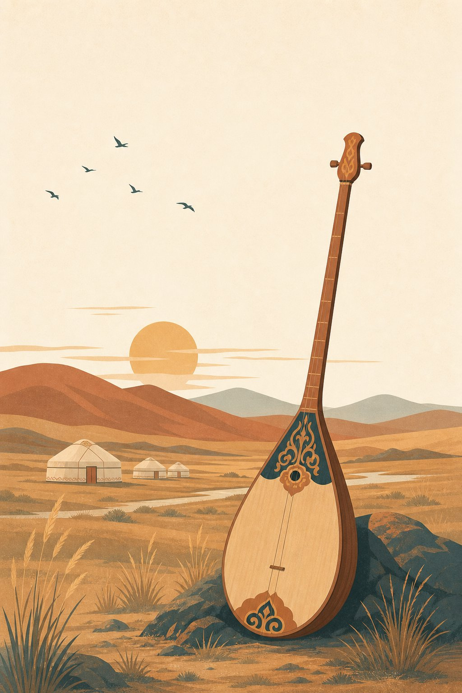

Бабалар үні — цифрлық әлемде
Қазақтың ұлттық музыкалық аспаптары туралы қарапайым тілмен жазылған интерактивті оқу сайты. Мұнда әр аспапты оқып, үнін тыңдап, аңызын біліп, ойын арқылы біліміңізді тексере аласыз.
«Ән — халықтың жаны, күй — халықтың сыры»

«Домбыра — қазақтың жаны. Оның екі ішегінде даланың тынысы мен халықтың тарихы жатыр»— Ұрпаққа аманат
Аспаптар қалай топталады?
Барлық аспап дыбыс шығару тәсіліне қарай топтарға бөлінеді. Топ атауын басып, сол топтың аспаптарын көре аласыз.
Балалар жиі сұрайтын 6 аспап
Карточкадағы «🔈 Үнін тыңдау» батырмасын басып, аспап үнін естіп көріңіз. «☆» белгісімен таңдаулыға қоса аласыз.
Осы сайтта не істеуге болады?
Барлық бөлім тегін, тіркелусіз жұмыс істейді. Қарапайым тілмен, суреттермен түсіндірілген.
Аспаптарды оқып білу
14 аспап туралы толық мәлімет: қалай жасалады, бөлшектері қандай, үні қандай.
Аңыздарды оқу
Қорқыт ата, жетігеннің жеті күйі, Ақсақ құлан — халық аңыздары қарапайым тілмен баяндалған.
Ойнап білім тексеру
Викторина, «Жұп тап» ойыны, флеш-карталар және ырғақ жаттығуы.
Тарихпен танысу
Аспаптар қай дәуірде пайда болды? Кезең-кезеңімен тарихи жолды көріңіз.
Сөздіктен сөз іздеу
32 түсінік: шанақ, тиек, перне, күй, асық — қарапайым түсіндірмемен.
Сайтты пайдалану
Қаріпті үлкейту, дыбысты қосу, оқу режимі — үлкен кісілерге арналған қарапайым нұсқаулық.
Білдіңіз бе?
Батырманы әр басқанда жаңа дерек шығады. Осылайша оқушы біртіндеп көп ақпарат біледі.
Аңшының садағынан оркестрге дейін
Музыкалық аспаптар мыңдаған жыл бойы өзгеріп, дамып келді. Толық тарихты жеке беттен оқи аласыз.
Дыбыс құралдары
Алғашқы аспаптар аңшылық құралдарынан шықты: садақтың қылы, малдың мүйізі, қурайдың сабағы.
Күй өнері
Домбыра мен қобыздың үнімен күйлер шығып, халықтың тарихы мен сезімі әуенге айналды.
Оркестр және цифр
1934 жылдан бері оркестр бар. Бүгінде аспап үндері цифрлық әлемде де естіледі.
Біліміңізді тексеріп көріңіз!
10 сұрақтан тұратын викторина. Әр жауаптан кейін дұрыс түсіндірме шығады — осылайша қателескен жеріңізді бірден білесіз.